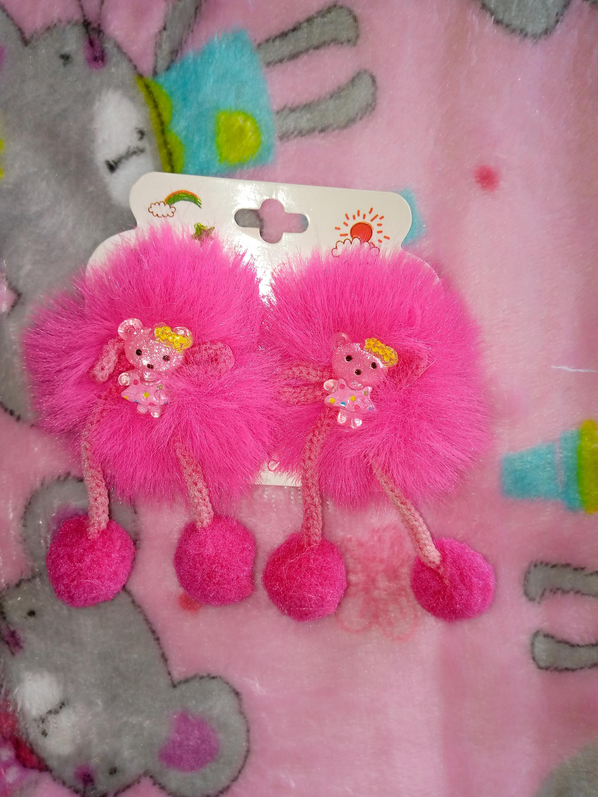

|
Pinzas para niña hecha em cinta rosa formando una flor, con pepas de shakira.
Precio: 3.000 |
Pinzas para niña hecha de cinta azul celeste canalada dando la forma de un corbatin.
Precio: 2.000 |
||
|
Pinza para niña hecha en tela peluche color azul haciendo forma de un Mickey.
Precio: 2.500 |
Pinza para niña hecha en cinta sencilla, formando un corbatin adornada con piedreria de murano.
Precio: 2.500 |
||
|  |
Pinzas para niña pico de loro, hecha en peluche y lleva en el centro la cara de una muñeca.
Precio: 3.000 |
Pinzas para niña hecha en tela toldillo color rosado pastel, y en el centro lleva una decoración de pepas formando un corazón.
Precio: 3.000 |
|
|
Pinzas para niña hecha de cinta lila canalada dando la forma de un corbatin.
Precio: 3.000 |
Pinzas para niña hecha en tela toldillo color amarillo pollo, y en el centro lleva una decoración de Hello Kitty.
Precio: 3.000 |